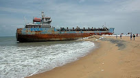

Kollam Beach

An array of beach activities attracts huge flocks of tourists throughout the year to thepristine Kollam Beach. The panoramic visuals of the Arabian Sea are enchanting. A port city and one time bustling harbour for Chinese ships and trade, Kollam Beach is home to Chinese fishing nets, Chinese water pots and sampan-like boats even to this day. Go over for a cultural and spiritual joyride that shall stay with you forever.
കേരളത്തിലെ ഒരു പ്രമുഖ കടൽപ്പുറമാണ് മഹാത്മാഗാന്ധി കടൽപ്പുറം എന്ന കൊല്ലം കടൽപ്പുറം. കടൽപ്പുറത്തോടനുബന്ധിച്ച് ഉദ്യാനവും മറ്റും ഉണ്ട്. അന്താരാഷ്ട്ര നിലവാരത്തിലുള്ള മഹാത്മാഗാന്ധി പാർക്ക് 1967 ജനുവരി 1ന് അന്നത്തെ ഉപരാഷ്ട്രപതിയായിരുന്ന സക്കീർ ഹുസൈനാണ് ഉദ്ഘാടനം ചെയ്തത്.
Chinnakada Clock Tower
Chinnakada Clock Tower is a historical landmark and tourist attraction located in Kollam, Kerala. The average rating of this place is 4.40 out of 5 stars based on 837 reviews. The street address of this place is VHPR+2FJ, Beach Rd, Chinnakada, Kollam, Kerala 691001, India. It is about 1.67 kilometers away from the Kollam Junction railway station.
കൊല്ലം നഗരത്തിന്റെ ഹൃദയഭാഗത്തായി ചിന്നക്കടയിൽ സ്ഥിതി ചെയ്യുന്ന ഒരു നിർമ്മിതിയാണ് കൊല്ലം ക്ലോക്ക് ടവർ. കൊല്ലം മുൻസിപ്പാലിറ്റിയിൽ 1932 മുതൽ 1948 വരെ ചെയർമാനായിരുന്ന 'രാജ്യസേവാനിരത കെ.ജി. പരമേശ്വരൻ പിള്ളയോടുള്ള' ആദരസൂചകമായാണ് ഈ ചതുരാകൃതിയിലുള്ള ഗോപുരം നിർമ്മിച്ചത്